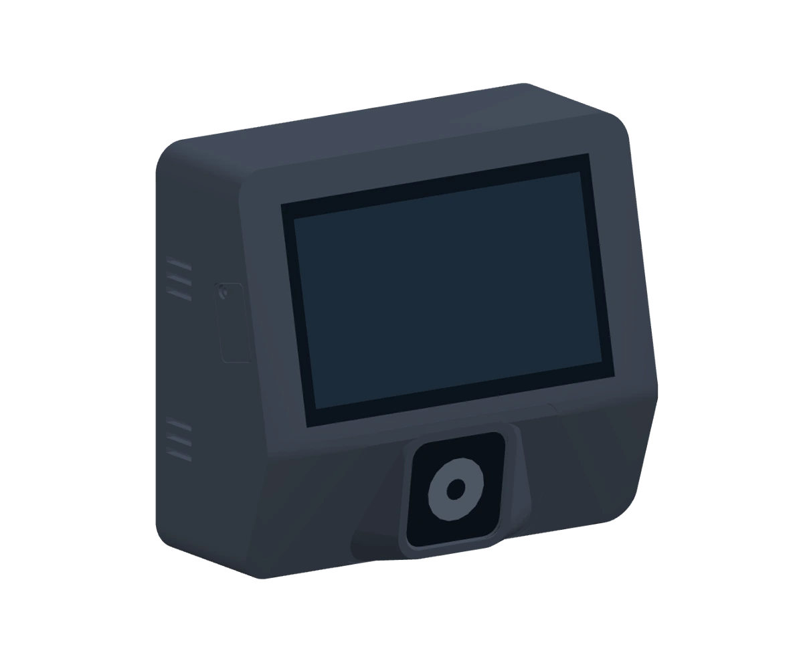
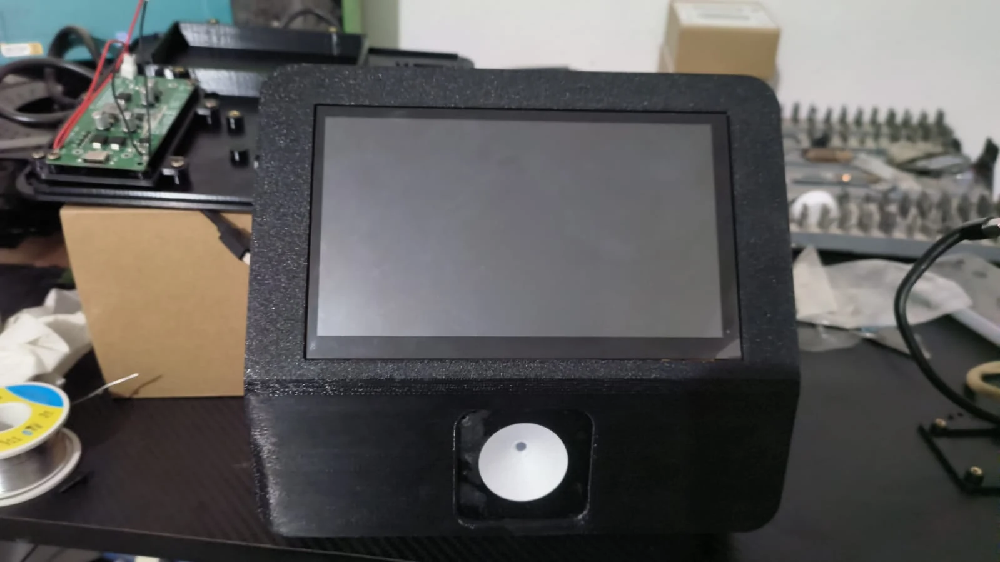

Acerca el producto
El lector integrado recibe el código de barras o QR.
Tenkai Checker 2.0
Checador de precios · Fabricación bajo pedido
Un producto, un escaneo, una respuesta. Un checador pensado para que tus clientes consulten el precio por sí mismos y sigan con su compra.
Desde $5,800 MXN · Base incluida.
Conexión nativa con Tenkai POS y opciones por puente.

Arrastra para girar · Usa + y − para acercar
Representación del diseño 2.0. La foto y el video de abajo muestran el prototipo 1.0.
Una consulta que sigue el ritmo de tu tienda
Acerca el código al lector y consulta el precio en pantalla. Una forma directa de resolver la pregunta más frecuente del pasillo.
El lector integrado recibe el código de barras o QR.
La pantalla muestra la información del producto de tu catálogo.
El cliente resuelve su consulta sin llevar el producto a caja.
Del diseño a la prueba real
El prototipo 1.0 ya se probó con Eleventa MultiCaja y SICAR 4.0. La versión 2.0 evoluciona su carcasa y montaje. Aquí puedes ver el equipo real que dio inicio al proyecto.

FOTO REAL 1.0El equipo de estos medios corresponde a la primera versión. El modelo 3D presenta el diseño exterior de la versión 2.0 en desarrollo.
Con tu punto de venta
Tenkai Checker se conecta de forma nativa con Tenkai POS mediante conexión rápida. Para Eleventa y SICAR 4.0 se proporciona un programa puente que lleva el catálogo al checador.
Conexión nativa · Sin programa puente
Integraciones por puente
Integración nativa
Vincula el checador con tu Tenkai POS desde conexión rápida. La conexión es directa y no necesita un programa puente.
Mantén Tenkai POS y la conexión con el checador disponibles para enviar los cambios del catálogo.
Conocer Tenkai POSSincronización en vivo · Con puente
Los cambios de productos, precios y códigos llegan mediante el programa puente en pocos segundos.
Requiere el puente activo y conexión del checador con el puente por la red local.
Sincronización en vivo · Con puente
Productos, precios y códigos se actualizan mediante el programa puente en pocos segundos.
Requiere el puente activo y conexión del checador con el puente por la red local.
Actualización manual · Con puente y respaldo
Sin sincronización en vivo. El catálogo se obtiene del último respaldo disponible; los precios corresponden al respaldo importado.
El equipo, en detalle
Una pantalla legible, un lector integrado y conexión con el catálogo de tu negocio.
Consultar mi integraciónConsulta la versión y configuración de tu punto de venta al preparar tu equipo. Ambas versiones incluyen el checador completo con su base.
Elige tu Tenkai Checker
Ambas incluyen el equipo completo con su base y un año de garantía limitada en componentes. Se fabrican bajo pedido, con entrega aproximada de 25 días después del pago.
Alimentación continua
$5,800MXN · Precio del equipo
El checador completo con su base, para trabajar con alimentación continua.
Respaldo ante cortes de luz
$6,500MXN · Precio del equipo
Respaldo para mantener encendido el checador si se interrumpe la energía.
La versión con batería permite seguir consultando el catálogo descargado durante el corte. Su apagador propio permite apagar y encender el equipo cuando lo necesites.
La autonomía de 4–5 horas es estimada y puede variar según el uso, el brillo de pantalla y el estado de la batería. Para recibir cambios de precios también deben seguir disponibles la red y Tenkai POS o el programa puente, según tu integración.
Fabricación bajo pedido
Plazo aproximado a partir del pago. Cada equipo se prepara bajo pedido.
Incluida en ambas versiones
La garantía se limita a componentes. No cubre daños por manipulación ni daños externos.
Tenkai Checker · Fabricación bajo pedido
Cuéntanos qué punto de venta utilizas. Te ayudamos a preparar la conexión nativa con Tenkai POS o la integración por puente que necesita tu tienda.